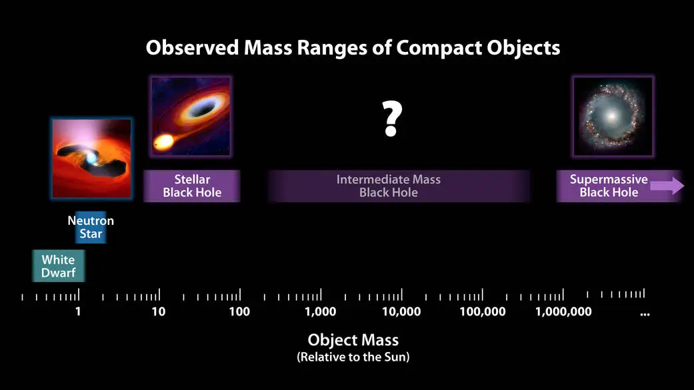
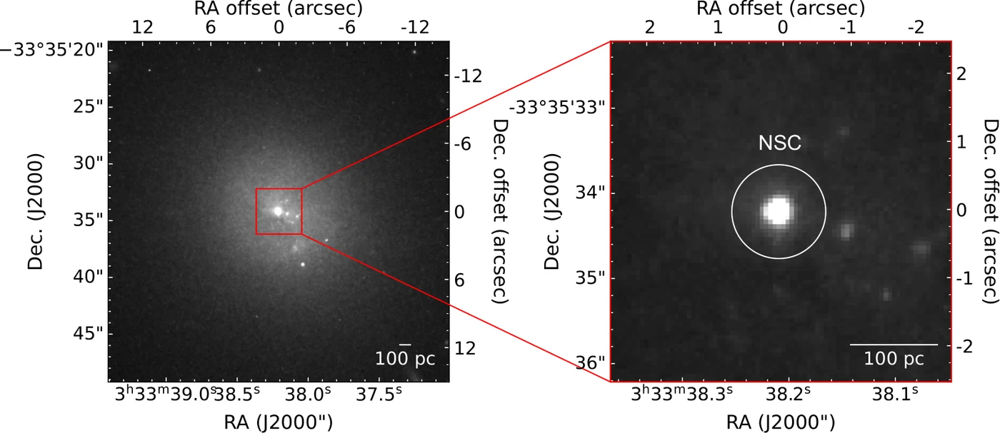

Formation and Evolution of Intermediate-Mass Black Holes
Intermediate-mass black holes are the least explored black holes in the Universe, and the closest surviving relatives of the seeds from which supermassive black holes grew. I study where they form and how they evolve: in the dense nuclear star clusters and dwarf galaxies of the nearby Universe today, and, through JWST, in the young Universe.
The Missing Link in the Black Hole Mass Spectrum
Most known black holes belong to one of two families. Stellar-mass black holes, of roughly 5 to 100 M☉, are the remnants of massive stars. Supermassive black holes, of 106 to 1010 M☉, sit at the centres of large galaxies. Between them lies the regime of intermediate-mass black holes (IMBHs), roughly 102–105 M☉, where only a handful of robust detections exist (Fig. 1).

The gap matters because every supermassive black hole must once have been smaller. Quasars powered by billion-solar-mass black holes are already in place less than a billion years after the Big Bang, which leaves little time to grow. Three families of formation channels, or seeds, are usually considered:
- Light seeds. Remnants of about 100 M☉ left behind by the first, metal-free stars, which must then grow quickly through accretion and mergers.
- Heavy seeds. Black holes of 104–105 M☉ formed by the direct collapse of pristine gas clouds, skipping the stellar stage.
- Dense-cluster seeds. IMBHs built in the cores of very dense star clusters, through runaway collisions of massive stars or repeated mergers of stellar-mass black holes.
Each channel predicts a different number and mass distribution of black holes left over in small galaxies and star clusters today. The IMBHs that never grew much are therefore a fossil record of how black holes were seeded. I study them in three complementary settings:
IMBHs in Nuclear Star Clusters
Most galaxies with stellar masses around 109 M☉ host a nuclear star cluster (NSC) at their centre: a few parsecs across, yet containing millions of stars (Fig. 2). Two routes are thought to build these clusters. Stars can form in situ from gas funnelled into the nucleus, or globular clusters can spiral inward through dynamical friction and merge at the centre. Both routes matter for black holes. The extreme stellar densities favour runaway growth of an IMBH inside the cluster, and in-spiralling clusters can carry their own black holes into the nucleus. Measuring the black hole mass together with the mass and structure of its host cluster is therefore a direct test of how the nucleus, and its black hole, were assembled.
The best recent evidence for an IMBH in a star cluster comes from fast-moving stars at the centre of ω Centauri (Häberle et al. 2024), an object widely thought to be the stripped nucleus of a dwarf galaxy that merged with the Milky Way. Beyond the Local Group, however, the sphere of influence of an IMBH shrinks far below what current telescopes can resolve. Dynamically confirmed IMBHs in nuclear star clusters are therefore limited to galaxies within about 3.5 Mpc.

My work: how far can we search for IMBHs?
To grow the sample of IMBHs in nuclear star clusters, we need a telescope that can resolve them well beyond 3.5 Mpc. The Extremely Large Telescope (ELT) will provide this. With my collaborators, I have built end-to-end simulations of its HARMONI integral-field spectrograph and MICADO camera (see Theme 04) to find out which IMBHs it can detect and weigh, and at what distances.
We selected 44 dwarf galaxies with nuclear star clusters within 10 Mpc and simulated HARMONI observations of two representative targets, NGC 300 and NGC 3115 dw01, across six near-infrared gratings at 10 mas resolution. HARMONI resolves the IMBH sphere of influence and recovers black hole masses down to about 0.5% of the cluster mass within feasible exposure times.
I extended the search to the two nearest rich galaxy clusters: Virgo in the northern sky and Fornax in the southern sky. I first identified dwarf galaxies that host nuclear star clusters, the likely nurseries of IMBHs in the local Universe. For FCC 119, the second-faintest dwarf in Fornax and fainter than most Virgo members, HARMONI can detect the kinematic signature of an IMBH and measure its mass for $M_{\rm BH} \gtrsim 10^5\,M_\odot$ out to about 20 Mpc.
VCC 1861 is one of the faintest galaxies in the Virgo Cluster. From HST-based stellar density profiles, JAM models and HSIM mock data, I showed that the ELT can detect IMBHs with masses of about 5% of the nuclear cluster's mass at the distance of Virgo.
A dense stellar cusp and a central black hole both make stars move faster near the centre, so the two must be separated carefully. Mock MICADO images give sharper stellar-mass models of the cluster core, and analysing them jointly with HARMONI kinematics shows how the inner surface-brightness slope of the cluster changes the inferred IMBH mass. The combined analysis gives tighter constraints on low-mass black holes.
| Target | Distance | What the ELT can recover | Paper |
|---|---|---|---|
| NGC 300, NGC 3115 dw01 | ≤ 10 Mpc | IMBHs down to ≈0.5% of the NSC mass | Nguyen, Cappellari, Ngo et al. 2025 |
| VCC 1861 (Virgo) | Virgo Cluster | IMBHs of ≈5% of the NSC mass | Ngo, Nguyen et al., submitted |
| FCC 119 (Fornax) | ≈ 20 Mpc | $M_{\rm BH} \gtrsim 10^5\,M_\odot$ | Ngo, Nguyen et al. 2025 |
Moving the search horizon from about 3.5 to 20 Mpc increases the surveyed volume by roughly a factor of 200. It also brings in the large populations of nucleated dwarf galaxies in the Virgo and Fornax clusters, which will turn a few individual detections into a statistical sample.
Black Holes in Dwarf Galaxies
Dwarf galaxies have had comparatively quiet lives, with few major mergers and little gas feeding their nuclei. Their central black holes have therefore grown little since they formed, and their masses stay close to the original seed masses. The seeding channels make different predictions here. If most seeds were heavy, direct-collapse black holes, which could form only in rare haloes, many dwarfs should have no central black hole at all. If most were light stellar remnants, nearly every dwarf should host one. The occupation fraction (how many dwarfs host a black hole) and the masses of those black holes are therefore two of the cleanest observational tests of black hole seeding.
So far, dynamical masses in this regime exist only for a handful of very nearby, low-mass early-type nuclei, such as NGC 205, NGC 5102, NGC 5206, M32 and NGC 404 (Nguyen et al. 2018; Davis et al. 2020). My work pushes the measurements toward lower masses and larger distances with two instruments:
- JWST, now. Our JWST/NIRSpec measurement of NGC 4736 showed that NIRSpec can detect black holes of about 5×106 M☉ in galaxies within 5 Mpc with velocity dispersions of about 100 km s−1 (A&A 2025), close to the low-mass regime of supermassive black holes.
- The ELT, next. The simulations above show that HARMONI will reach IMBHs of about 105 M☉ in dwarf galaxies out to 20 Mpc, which is what a census of the occupation fraction requires.
Growing Black Holes at High Redshift: Little Red Dots
JWST has opened a direct view of black holes while they were still young. One of its most surprising discoveries is a population of compact, red sources in the first one to two billion years of cosmic history, nicknamed Little Red Dots (LRDs). Many of them show broad hydrogen emission lines, the signature of fast-moving gas around an accreting black hole, and they are far more numerous than the bright quasars known at the same epochs (Matthee et al. 2024; Greene et al. 2024).
If their broad lines are interpreted in the same way as in nearby active galaxies, many early black holes appear overmassive relative to the stars of their host galaxies compared with the local scaling relations (Pacucci et al. 2023; Maiolino et al. 2024). This would favour heavy seeds or very rapid early growth. These mass estimates, however, rely on calibrations derived for nearby active galaxies, and the physical nature of LRDs is still actively debated, so whether their black holes are truly overmassive remains an open question.
The early and the local Universe tell two ends of the same story. A population of black holes that started heavy and grew fast should leave a different imprint on the occupation fraction and on the low-mass end of the scaling relations today than one grown from light seeds. My dynamical measurements, and the ELT forecasts above, provide the present-day side of this comparison. Their masses come directly from stellar and gas motions and do not depend on calibrations of active galaxies. Connecting the black holes that JWST sees growing at high redshift with their fossil descendants in nearby nuclear star clusters and dwarf galaxies is the long-term goal of this theme.
Summary of Findings
- The ELT can open the IMBH regime. Within 10 Mpc, HARMONI can weigh IMBHs down to about 0.5% of their host cluster's mass, using a sample of 44 nucleated galaxies.
- The search can reach Virgo and Fornax. IMBHs above about 105 M☉, or about 5% of the cluster mass, are detectable out to 20 Mpc, even in some of the faintest dwarfs of both clusters. This is about 200 times the volume where IMBHs in nuclear star clusters have been dynamically confirmed.
- Cluster structure matters. The inner stellar profile of the nuclear star cluster affects the recovered IMBH mass, so sharp MICADO imaging is needed alongside HARMONI spectroscopy.
- A local test of seeding. Together, these measurements will constrain the occupation fraction and the low-mass end of the scaling relations, which can then be compared with the growing black holes that JWST finds at high redshift.
Literature Review
The seeding problem is reviewed by Volonteri (2010) and Inayoshi, Visbal & Haiman (2020), and the observational status of IMBHs by Greene, Strader & Ho (2020). Formation in dense star clusters was proposed through runaway stellar collisions (Portegies Zwart et al. 2004) and repeated black hole mergers (Miller & Hamilton 2002). Nuclear star clusters and their two formation routes, cluster in-spiral (Tremaine, Ostriker & Spitzer 1975; Antonini et al. 2012) and in-situ star formation, are reviewed by Neumayer, Seth & Böker (2020).
Occupation fractions in low-mass galaxies as a test of seeding are discussed by Volonteri, Lodato & Natarajan (2008) and Greene (2012), and the low-mass end of the black hole–stellar mass relation by Reines & Volonteri (2015). At high redshift, JWST has revealed abundant faint, broad-line active galaxies and Little Red Dots (Matthee et al. 2024; Greene et al. 2024), whose black holes may lie above the local relations (Pacucci et al. 2023; Maiolino et al. 2024).
Papers in This Theme
- Detecting Intermediate-Mass Black Holes out to 20 Mpc with ELT/HARMONI: The Case of FCC 119Ngo, H. N., Nguyen, D. D., Le, T. Q. T., et al. 2025, Universe, 11, 360doi↗
- Extending Simulations of Intermediate-Mass Black Hole Mass Measurements to the Virgo Cluster using ELT/HARMONINgo, H. N., Nguyen, D. D., et al. 2025, Inżynieria Mineralna, 2(1)doi↗
- Simulating Intermediate-Mass Black Hole Mass Measurements for a Sample of Galaxies with Nuclear Star Clusters using ELT/HARMONINguyen, D. D., Cappellari, M., Ngo, H. N., et al. 2025, AJ, 170, 124doi↗
- Probing the Effect of the Inner Surface-Brightness Profile of Nuclear Star Clusters on IMBH Mass Measurements using Mock ELT/MICADO and HARMONI ObservationsLe, T. Q. T., Nguyen, D. D., Ngo, H. N., et al. 2026, Universe, 12, 160doi↗
- Supermassive Black Hole Mass Measurement in the Spiral Galaxy NGC 4736 using JWST/NIRSpec Stellar KinematicsNguyen, D. D., Ngo, H. N., et al. 2025, A&A, 698, L9doi↗